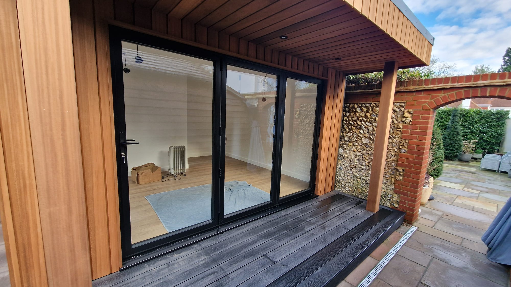
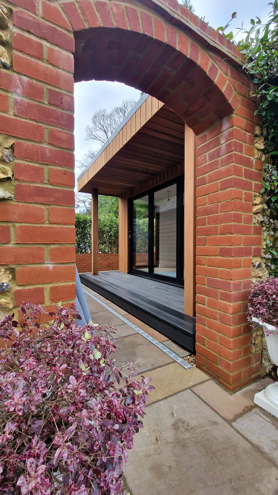
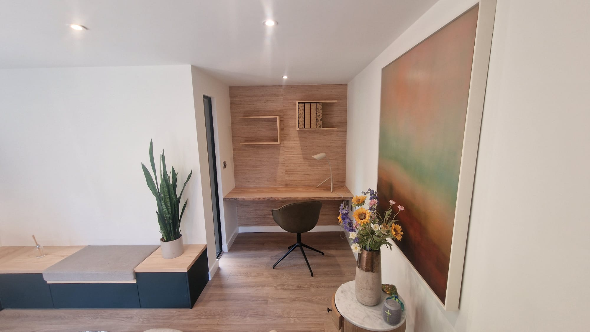
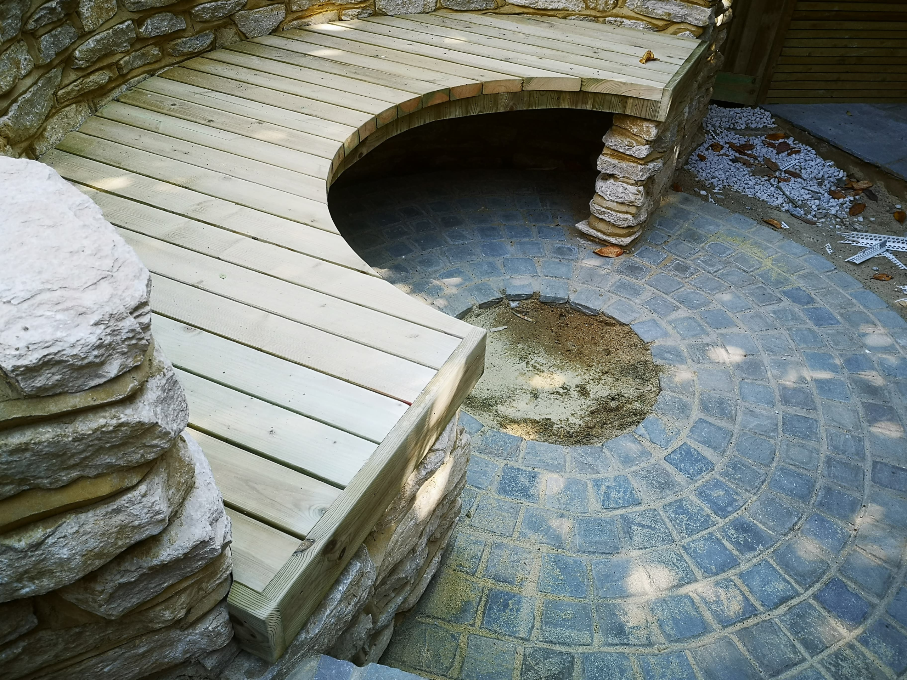
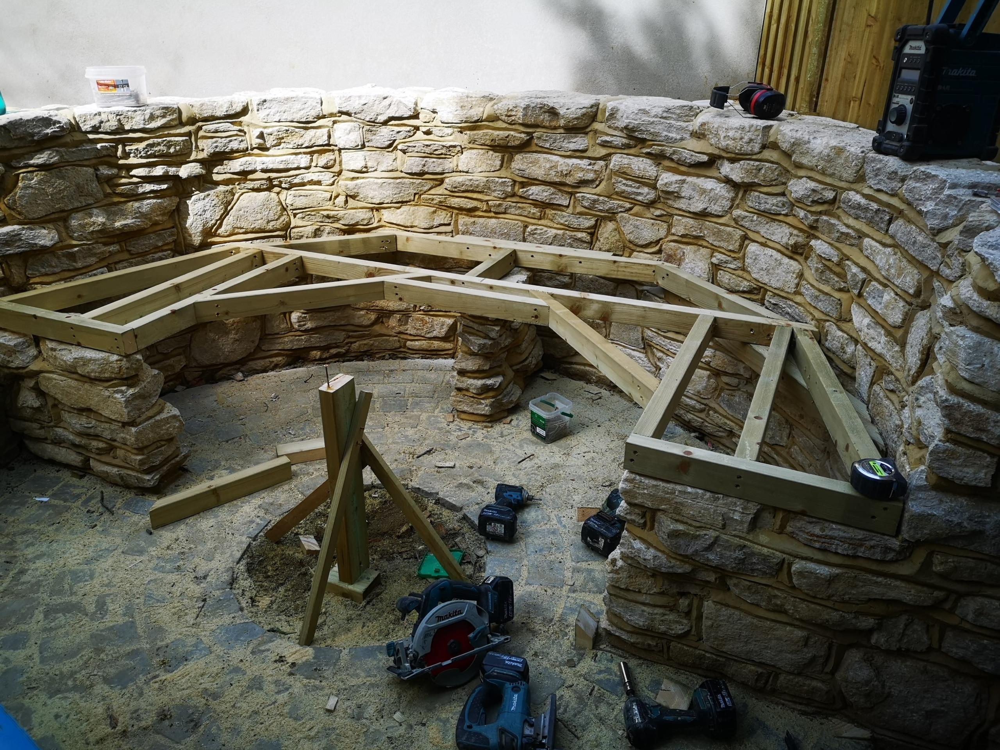
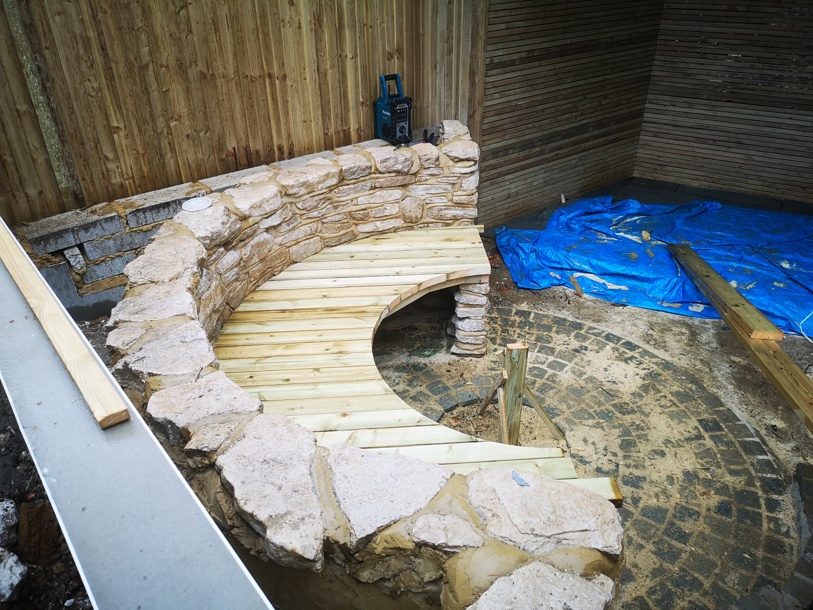
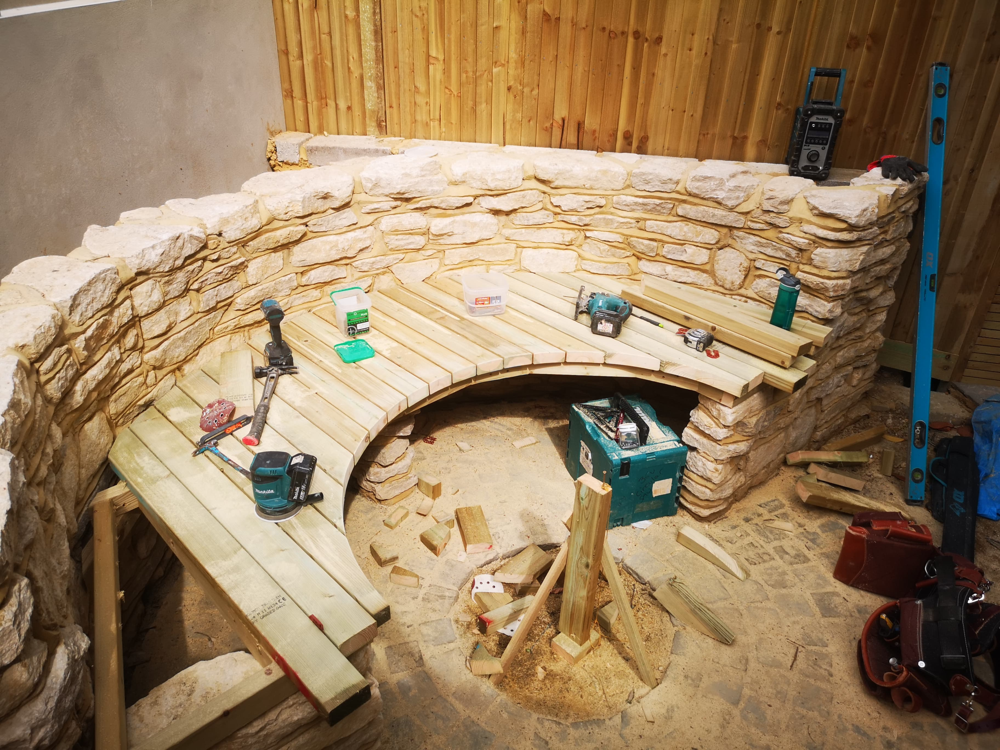
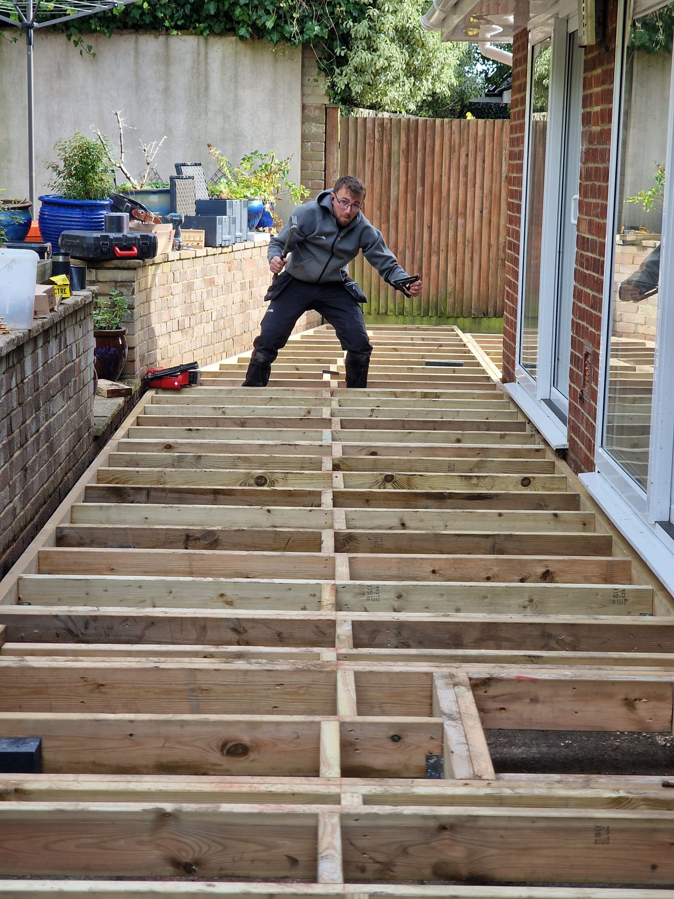

Garden Rooms
Flexible spaces designed around how you want to use your garden, from home offices to quiet retreats.
OUR PORTFOLIO
Take a look at some of our recent projects and see what ARC Sussex Carpentry can create for your home and garden.
Start Your ProjectCRAFTED FOR YOUR SPACE
Every project starts with an idea. Whether it's a complete garden transformation, a bespoke outdoor structure or a smaller piece of carpentry designed around your home, we work closely with our clients to turn that idea into something practical, considered and built to last.
From raised beds and fencing to garden rooms, decking, outdoor seating and detailed interior carpentry, our work covers a wide range of projects across Brighton, Worthing and Sussex.
01
GARDEN ROOM · SUSSEX
At ARC Sussex Carpentry, we specialise in designing and building bespoke garden rooms in Brighton and across Sussex, crafted to perfectly suit your lifestyle and outdoor space.
Whether you're looking for a stylish home office, a peaceful studio, an entertainment space for family and friends or simply a retreat to enjoy your garden throughout the year, we create garden rooms that combine practicality, comfort and character.
This project features a contemporary timber-clad garden room with generous glazing, a covered outdoor area and carefully considered interior carpentry. The result is a flexible space that feels connected to the garden while providing a comfortable room to use all year round.
Every detail was designed with durability and long-term usability in mind, from the timber structure and cladding through to the built-in storage and interior finishes.




"ARC Sussex carpentry completed my garden room to my entire satisfaction. The quality of build and service were beyond my expectations. Highly recommended."
02
BESPOKE GARDEN SEATING · BRIGHTON

The client came to us with an idea for something that combined natural stone and timber in a circular design.
Working from the initial concept, we developed the timber seating to follow the existing curved stonework, creating a piece that feels like it belongs naturally within the garden rather than being added as an afterthought.
Once the design was ready, we set about carefully shaping and fitting the timber to create the sweeping curves and clean finished edges.
The result is a completely bespoke outdoor seating area that makes use of an unusual space while giving the garden a distinctive focal point.



"Their process was efficient at every stage. Every detail of the finished touches is not short of fantastic. I'm very impressed with the improvements their renovations have brought to my cosy Brighton home."
MORE THAN ONE TYPE OF PROJECT
Flexible spaces designed around how you want to use your garden, from home offices to quiet retreats.
Practical, well-finished outdoor spaces that make more of your garden and complement the existing landscape.
Made-to-measure solutions for homes and gardens, from seating and storage to individual design details.
THE PEOPLE BEHIND THE WORK
Hey there, carpentry is my craft and passion, which is why you'll rarely see me anywhere other than with my head down getting on with some work.

Despite the fact I enjoy putting fun and creativity into the work I take great pride in, I make every effort to make sure our work comes out exactly how you imagined.

Let's turn your ideas into something you can enjoy for years to come.
Book A FREE Consultation Now